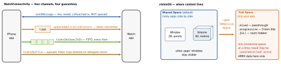

ios-platform · folio
In one line: watchOS: a separate bundle on a separate device — glance-first, mostly suspended, talks to the phone through WatchConnectivity (four channels with different delivery guarantees) or the network itself. visionOS: SwiftUI scenes placed in space — windows, volumes, immersive spaces — driven by gaze + pinch, where the system, never the app, knows where the user looks.
Download PDF Print view LaTeX source


watchOS
- Structure: SwiftUI
App(watchOS 7); one watch target since Xcode 14. Own bundle, version, install — no shared process or files with the iPhone app. - Independent (
WKRunsIndependentlyOfCompanionApp, orWKWatchOnly) vs companion: independent apps network themselves; WatchConnectivity is an optimisation. App Groups share only on one device. - Complications = WidgetKit (watchOS 9; ClockKit deprecated):
.accessoryCircular / Rectangular / Inline / Corner; timeline entries render without waking you. Widgets also fill the Smart Stack (watchOS 10), ranked by relevance. - Background: mostly suspended.
WKApplicationRefreshBackgroundTask; with a complication on the active face ≈4 refreshes/hour. Complete every task or lose budget.WKExtendedRuntimeSession: fixed types (mindfulness, smart alarm…). - Workouts:
HKWorkoutSession+HKLiveWorkoutBuilder= the sanctioned long-running mode. HealthKit hides read denial — looks like no data. Always On:\.isLuminanceReduced.
WatchConnectivity table
| API | Reachable? | Delivery · use |
|---|---|---|
sendMessage | required | now or error; watch→phone wakes the iOS app in background, phone→watch does not · live request/reply |
updateApplicationContext | no | background, latest only · current state, settings |
transferUserInfo | no | background FIFO, survives relaunch · events that must all arrive |
transferFile | no | background queue · images, audio |
transferCurrentComplicationUserInfo | no | high priority, daily budget · complication data |
let s = WCSession.default // both sides: delegate + activate()
if s.isReachable {
s.sendMessage(msg, replyHandler: nil, errorHandler: nil) }
else { try? s.updateApplicationContext(state) } // latest wins
// delegate runs on a BACKGROUND queue: hop to @MainActorvisionOS
- Scenes:
WindowGroup(window) ·.windowStyle(.volumetric)+.defaultSize(…, in: .meters)(volume) ·ImmersiveSpace(id:)+.immersionStyle.await openImmersiveSpace(id:)and check the result. RealityView { content in }: RealityKit entities in metres;update:syncs state;attachments:pin SwiftUI views to entities.TapGesture().targetedToAnyEntity()fires only on entities withInputTargetComponent+CollisionComponent.- Input: indirect = look + pinch; direct = touch content in reach. The hover highlight
is drawn by the system out of process — the app gets only the pinch-as-tap, never gaze.
.hoverEffect(); targets ≥ 60 pt. - ARKit (
ARKitSession+ hand / scene-reconstruction / plane / world providers): needs authorisation (NSHandsTrackingUsageDescription,NSWorldSensingUsageDescription) and an open immersive space. - Ornaments:
.ornament(attachmentAnchor: .scene(.bottom))— controls outside the window. - Porting iPad: “Designed for iPad” runs unmodified in a window; the visionOS destination adds glass, ornaments, volumes, spaces — then fix touch/hover assumptions and tiny targets.
Traps
updateApplicationContextfor events — the 2nd call overwrites the 1st; usetransferUserInfo.sendMessagewhile not reachable — nothing queued; no fallback = data lost.isReachable≠ paired: checkisPaired/isWatchAppInstalled(iOS); iOS side must also handlesessionDidBecomeInactive/sessionDidDeactivate(watch switching) and reactivate.- Received file used later — the inbox file is deleted when
session(_:didReceive:)returns; move it. - “Log what the user looked at” on visionOS — impossible by design.
Remember
Watch: “message now, context latest, userInfo all, file big.” Vision: “window, volume, space — the system sees the eyes, you see the pinch.”